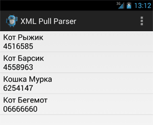

/* Моя кошка замечательно разбирается в программировании. Стоит мне объяснить проблему ей - и все становится ясно. */
John Robbins, Debugging Applications, Microsoft Press, 2000

/* Моя кошка замечательно разбирается в программировании. Стоит мне объяснить проблему ей - и все становится ясно. */
John Robbins, Debugging Applications, Microsoft Press, 2000
Рассмотрим парсер XML Pull Parser. Парсер позволяет разбирать XML-документы за один проход. После прохода парсер представляет элементы документа в виде последовательности событий и тегов. На данный момент именно его рекомендует использовать Google в Android-приложениях.
Посмотрим на документ глазами парсера. Он видит следующие элементы документа:
Каждый документ начинается с события START_DOCUMENT и заканчивается событием END_DOCUMENT. Позиция внутри документа представлена в виде текущего события, которое можно определить, вызвав метод getEventType().
Для последовательного перехода по тегам нужно вызывать метод next(), который перемещает нас по цепочке совпавших (иногда вложенных) событий START_TAG и END_TAG. Можно извлечь имя любого тега при помощи метода getName() и получить текст между каждым набором тегов с помощью метода getNextText().
Чтобы упаковать статический XML-документ вместе с вашим приложением, поместите его в каталог res/xml/. Вы получите возможность обращаться в коде программы к этому документу (операции чтения и записи). Рассмотрим загрузку XML-документа произвольной структуры из ресурсов в код программы.
Создадим пример приложения, способный читать список имён котов и их домашних телефонов, определённых в XML-файле.
В каталоге res создайте подкаталог xml, в котором будет располагаться наш ХМL-файл. В этом файле мы напишем список котов и телефонов, и сохраним его под именем contacts.xml.
<contacts>
<contact
first_name="Кот"
last_name="Рыжик"
phone="4516585"/>
<contact
first_name="Кот"
last_name="Барсик"
phone="4558963"/>
<contact
first_name="Кошка"
last_name="Мурка"
phone="6254147"/>
<contact
first_name="Кот"
last_name="Бегемот"
phone="06666660"/>
</contacts>
Добавим в разметку компонент ListView:
<?xml version="1.0" encoding="utf-8"?>
<LinearLayout xmlns:android="http://schemas.android.com/apk/res/android"
android:layout_width="match_parent"
android:layout_height="match_parent"
android:orientation="vertical" >
<ListView
android:id="@+id/listView"
android:layout_width="match_parent"
android:layout_height="match_parent" />
</LinearLayout>
Загрузить файл contacts.xml, созданный ранее, можно следующим образом:
XmlPullParser parser = getResources().getXml(R.xml.contacts);
Метод getXml() возвращает XmlPullParser, который может прочитать загруженный XML-документ в цикле while:
// продолжаем, пока не достигнем конца документа
while (parser.getEventType()!= XmlPullParser.END_DOCUMENT) {
if (parser.getEventType() == XmlPullParser.START_TAG
&& parser.getName().equals("contact")) {
list.add(parser.getAttributeValue(0) + " "
+ parser.getAttributeValue(1) + "\n"
+ parser.getAttributeValue(2));
}
parser.next();
}
Как это происходит? Запускаем цикл while с условием, что он будет работать пока не достигнет конца документа, т.е. закрывающего корневого тега (END_DOCUMENT).
Далее парсер начинает перемещаться по тегам. Мы говорим ему, что если (if) встретишь тег contact, то передай ему привет добавь в массив текст из первого атрибута. И из второго атрибута. И из третьего атрибута. После чего даём пинка парсеру с помощью метода next(), чтобы он шёл искать дальше.
У элемента contact мы определили три атрибута first_name, last_name и phone, которые загружаются в список. Первые два атрибута разделяем пробелом, а третий атрибут (номер телефона) выводим на новой строке.
Полностью код выглядит следующим образом:
package ru.alexanderklimov.test;
import java.util.ArrayList;
import org.xmlpull.v1.XmlPullParser;
import android.os.Bundle;
import android.app.Activity;
import android.view.View;
import android.widget.ArrayAdapter;
import android.widget.ListView;
import android.widget.Toast;
public class MainActivity extends Activity {
ListView lvInfo;
@Override
protected void onCreate(Bundle savedInstanceState) {
super.onCreate(savedInstanceState);
setContentView(R.layout.activity_main);
lvInfo = (ListView) findViewById(R.id.listView);
ArrayList<String> list = new ArrayList<String>();
try {
XmlPullParser parser = getResources().getXml(R.xml.contacts);
while (parser.getEventType() != XmlPullParser.END_DOCUMENT) {
if (parser.getEventType() == XmlPullParser.START_TAG
&& parser.getName().equals("contact")) {
list.add(parser.getAttributeValue(0) + " "
+ parser.getAttributeValue(1) + "\n"
+ parser.getAttributeValue(2));
}
parser.next();
}
} catch (Throwable t) {
Toast.makeText(this,
"Ошибка при загрузке XML-документа: " + t.toString(), Toast.LENGTH_LONG)
.show();
}
ArrayAdapter<String> adapter = new ArrayAdapter<String>(this,
android.R.layout.simple_list_item_1, list);
lvInfo.setAdapter(adapter);
}
}

Для закрепления материала изменим структуру документа. Пусть он будет выглядеть следующим образом:
<?xml version="1.0" encoding="utf-8"?>
<data>
<contact>
<firstname>Кот</firstname>
<lastname>Рыжик</lastname>
<phone
home="4516585"
work="1111" />
</contact>
<contact>
<firstname>Кот</firstname>
<lastname>Барсик</lastname>
<phone
home="4516586"
work="222" />
</contact>
<contact>
<firstname>Кошка</firstname>
<lastname>Мурка</lastname>
<phone
home="4516587"
work="3333" />
</contact>
</data>
А теперь напишем код, который будет отслеживать все теги при разборе документа и выводить результат в лог.
@Override
protected void onCreate(Bundle savedInstanceState) {
super.onCreate(savedInstanceState);
setContentView(R.layout.activity_main);
try {
XmlPullParser parser = getResources().getXml(R.xml.contacts);
while (parser.getEventType() != XmlPullParser.END_DOCUMENT) {
final String TAG = "ЛогКот";
String tmp = "";
switch (parser.getEventType()) {
case XmlPullParser.START_DOCUMENT:
Log.d(TAG, "Начало документа");
break;
// начало тэга
case XmlPullParser.START_TAG:
Log.d(TAG,
"START_TAG: имя тега = " + parser.getName()
+ ", уровень = " + parser.getDepth()
+ ", число атрибутов = "
+ parser.getAttributeCount());
tmp = "";
for (int i = 0; i < parser.getAttributeCount(); i++) {
tmp = tmp + parser.getAttributeName(i) + " = "
+ parser.getAttributeValue(i) + ", ";
}
if (!TextUtils.isEmpty(tmp))
Log.d(TAG, "Атрибуты: " + tmp);
break;
// конец тега
case XmlPullParser.END_TAG:
Log.d(TAG, "END_TAG: имя тега = " + parser.getName());
break;
// содержимое тега
case XmlPullParser.TEXT:
Log.d(TAG, "текст = " + parser.getText());
break;
default:
break;
}
parser.next();
}
} catch (Throwable t) {
Toast.makeText(this,
"Ошибка при загрузке XML-документа: " + t.toString(),
Toast.LENGTH_LONG).show();
}
}
Принцип тот же. Только на этот раз результат мы не выводим в списке, а просто выводим в лог. Для удобства совместил картинку документа и лог на одном экране, чтобы наглядно показать работу парсера.
Если вы будете брать документ не из ресурсов, а из файла с внешнего накопителя, то получение парсера для обработки документа будет иным:
//XmlPullParser parser = getResources().getXml(R.xml.contacts);
// из файла на SD-карты
XmlPullParserFactory factory = XmlPullParserFactory.newInstance();
//factory.setNamespaceAware(true); // если используется пространство имён
XmlPullParser parser = factory.newPullParser();
File file = new File(Environment.getExternalStorageDirectory()+ "/sd-contacts.xml");
FileInputStream fis = new FileInputStream(file);
parser.setInput(new InputStreamReader(fis));
Это самый простой пример использования парсера для чтения документа из ресурсов. В реальных приложениях вам придётся получать информацию с файла, который находится в интернете.